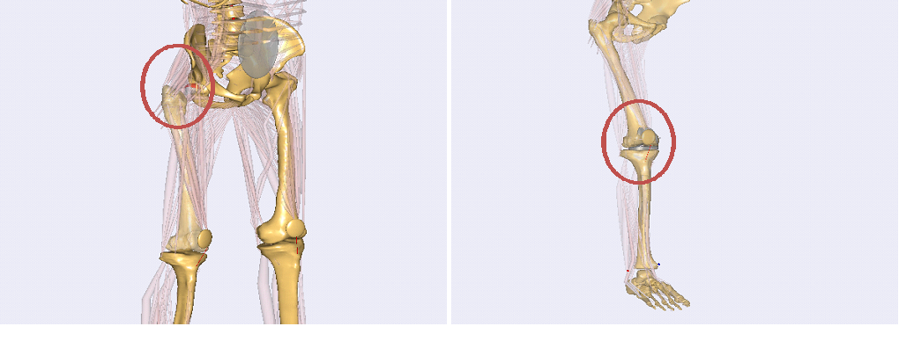

Lesson 5: Using Contact Forces to Replace a Joint in a Human Model#
Old tutorial:
This tutorial has not yet been updated to ver. 7 of the AnyBody Modeling System. Some concepts may have changed.
In Lesson4, we have seen how a joint could be constructed by using
geometry data of a real bone or implant. Now in this lesson, we shall
have a brief look at how such a joint can be used in a complete human
body model. Fortunately, this is already done in two examples of the
AMMR (version 1.5). Thus, please make sure that you have AMMR 1.5
installed on your computer. You can find the models mentioned under
Application/Examples/THA-KneeBendDemo and
Application/Beta/TKA-KneeBendDemo.

The first example is a model of a total hip replacement using a contact between geometries of hip implants, the second one is a model of a total knee replacement where the knee joint is replaced by the contact of knee implant geometries for a femoral and a tibia part. Both examples are models of a knee bend motion. For the sake of simplicity, we concentrate on how the new joint model is inserted in the first, the hip implant model. The knee replacement model works with a similar concept, but it is more complicated and more sensible to make changes in this model, because of delicate balance between joint positioning and ligament tension. It should be noticed that the model contains no easy way to position the knee joint parts, only trial and error, and this is also why the model still resides in the Beta section of the Application models.
Loading the file THA-KneeBendDemo.Main.any in AnyBody and opening a Model View, you can see that the model is a human model, which includes two parts of a hip implant, a cup in the pelvis and a femoral component.
In general, the replacement of a standard joint in the body model by a contact joint can be split into three steps. The first step is to define and position the implants in the model. Looking in the main file, in the bottom, we find the lines
#include "Implants.any"
The file Implants.any includes the definitions these two implants into the different segments, i.e., the pelvis and the right thigh.
Main.HumanModel.BodyModel.Right.Leg.Seg.Thigh.HipJointISBCoordinateSystem = {
AnyRefNode FemImplantNode =
{
ARel = {{-0.7390397, 0.5761477, -0.3491089},
{-0.626916, -0.7778804, 0.04337248},
{-0.2465756, 0.2509154, 0.9360795}};
AnySurfSTL FemoralImplant =
{
FileName = "stl files/FemImplant";
ScaleXYZ = 0.7*1.0*{1.0, 1.0, 1.0};
AnyDrawSurf DrwSurfFem = {
FileName = .FileName;
ScaleXYZ = .ScaleXYZ;
Opacity = 0.3;
};
};
};
...
};
Main.HumanModel.BodyModel.Trunk.SegmentsLumbar.PelvisSeg.Right.HipJoint = {
AnyRefNode PelvisImplantNode = {
ARel = {{0.9793473, -0.2007827, -0.02375309},
{0.1867485, 0.8533001, 0.4868296},
{-0.0774785, -0.4812113, 0.8731734}};
AnySurfSTL PelvisImplant = {
FileName = "stl files/HipCup";
ScaleXYZ = 1.0*0.1450*{1.0, 1.0, 1.0};
AnyDrawSurf DrwSurfFem = {
FileName = .FileName;
ScaleXYZ = .ScaleXYZ;
RGB = {1,0,0};
Opacity = 0.3;
};
};
};
...
};
Additional to that, we can find the file BoneExchange.any included in the main file. This file exchanges the standard femur bone against a cut version. The only reason to do this is for visualization to see the implant better. It has no impact on the mechanics.
The second step is, similar to the simple-knee model in the lessons before, the definition of the contact forces. This, we can find under
#include "ContactForces.any"
Here, the contact force between the two implant components is defined. Further down we see an artificial force is defined. This is basically a force that should not produce big forces, but which is sometimes needed by the FDK solver to find a solution in cases where the implants are not in contact and ligaments and muscles are slack and do not produce forces.
AnyForceSurfaceContact FSurf =
{
AnySurface &sMaster = Main.HumanModel.BodyModel.Right.Leg.Seg.Thigh.HipJointISBCoordinateSystem.FemImplantNode.FemoralImplant;
AnySurface &sSlave = Main.HumanModel.BodyModel.Trunk.SegmentsLumbar.PelvisSeg.Right.HipJoint.PelvisImplantNode.PelvisImplant;
PressureModule = 3e9;
ForceViewOnOff = On;
MeshRefinementMaster = 0;
MeshRefinementSlave = 0;
SingleSidedOnOff= On;
};
AnyForce ArtificialStiffness =
{
AnyFloat Stiffness = 5e4; // N/m
AnyKinLinear lin =
{
AnyRefFrame &r1= Main.HumanModel.BodyModel.Trunk.SegmentsLumbar.PelvisSeg.Right.HipJoint.PelvisImplantNode;
AnyRefFrame &r2 = Main.HumanModel.BodyModel.Right.Leg.Seg.Thigh.HipJointISBCoordinateSystem.FemImplantNode;
};
F = - Stiffness * lin.Pos;
};
After we defined all the forces we need in our contact joint, the last step is to replace the standard joint in the body model by our new contact joint. Basically, this is the same as in the model of Lesson 4 except that now we have to remove the standard joint, which comes with the corresponding body part from the AMMR. All this, the exclusion of the standard joint and the definition of the new joint, we can find in the file HipExchange.any which is included inside the AnyBodyStudy.
The first part of this file removes the standard joints and drivers for the hip joint from the model. Therefore, all objects which have to do with the definition of this joint are collected using ObjSearch functions which return lists of the mechanical objects. These lists are gathered into a single list of object pointers (AnyObjectPtr). Finally, this list is excluded from the Study using the MechObjectExclude member of the AnyBodyStudy.
MechObjectExclude = arrcat(
ObjSearch("Main.HumanModel.BodyModel.Right.Leg.Seg.Thigh.HipJoint","AnyMechObject"),
ObjSearchRecursive("Main.HumanModel.BodyModel.Right.Leg.Jnt.Hip","*","AnyMechObject"),
ObjSearchRecursive("Main.Model.ModelEnvironmentConnection.JointsAndDrivers.JntDriverRightLegTD","Hip*","AnyMechObject")
);
The definition of force dependent drivers works similar to the definition in Lesson 2. The only difference is now, that now we have a full 3D model and so we have to think about which degrees of freedom we want to include as force-dependent. If we look at the drivers of this model, we can see that for this particular model we have 3 force-dependent degrees of freedom in the hip, i.e. all linear constraints of a spherical joint.
These are all changes that have to be done to this model to implement a contact joint. To see the differences between the standard joint and the contact joint, we can use the define statement USE_FDK that switches between the two joint definitions by excluding and including the two last of the three mentioned steps, i.e. the definition of the new joint and the definition of the contact forces.
As mentioned before, the model TKA-KneeBendDemo uses the same concept to exchange the joints of the knee. The biggest difference is the complexity of the knee joint compared to the hip joint. This makes the model more complicated in the sense that we have to define additional ligaments which constrain the movement in a knee (e.g. PCL, medial and lateral collateral ligaments). These have to be calibrated carefully which makes the model more sensitive to changes.
To conclude this tutorial, we want to mention some difficulties which might show up while using a contact joint in a model. For modeling contact forces, the used geometries, here the implant STL files, have to be adequately detailed and smooth. That means that the quality of the surfaces is significant for the results of the contact modeling. A few remarks on how to assure a good quality of the surfaces can be found in this appendix.
See also
A few remarks on how to assure a good quality of the surfaces can be found in this appendix.